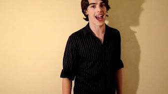
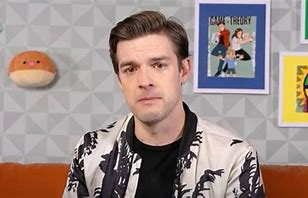

| 1 | name | DOB | location | spouse | age | child |
|---|---|---|---|---|---|---|
| 2 | Matthew Robert Patrick | 15/11/86 | Florida America | Stephanie Cordato | 37 | 1- Oliver Patrick |
Matthew was born in Medina Ohio as a Polish Czech and Slovakian boy, he was always interested in video games, and theater and was a high achiever in his academics. He was given the nickname MatPat in 6th grade, and by the end of his high school years he was the valedictorian and got a scholarship to Duke University (where he met his spouse), he double majored in theater and psychology and graduated in 2009.
After university MatPat moved to a small apartment in New York with his girlfriend and soon-to-be wife Stephanie. He spent two years trying to get a career in theater but he stayed unemployed, according to his wife recounting the time there in her video he almost got hypothermia because he was trying to work as an outdoors street vendor in the cold as well as taking risky, low paying jobs like rigging theater lights. To put it simply, he was unhappy which is why in 2011 he started a YouTube channel, the first few videos were acting videos to refine his portfolio he eventually made one special video that would forever change the course of his life.
When making this video MatPat wanted to make an engaging way to teach people; an edutainment video. With that said he went to his closet, took a 20-dollar microphone, and recorded his first game theory; Game theory: Is Chrono Trigger Time travel Truths , It was on the RPG game Chrono Trigger. This game was something he was truly passionate about so he enjoyed making the video, despite his resources and the low quality of the video. This video was the start of a series of videos that made his channel more and more popular, his crew increased, and the quality of videos increased, enough for him to make the spinoff channel, Film Theory in 2014. MatPat had made some of the world's most talked about channels that stayed relevant. Soon enough he made the Let's Play channel GTlive in 2015, 2016's game lab where he made higher quality theories. He even made Pope Francis play Undertale and met the man himself! in 2022 he made the spinoff channel Food Theory followed by Style Theory in 2023.
After years of educating and entertaining the internet MatPat decided it was time to retire on March 9, 2024, he made a video called "Goodbye Internet" in January announcing his retirement or semi-retirement, people around the globe were talking about it, some were sad, some were happy that he could spend more time on his family, some even made theories about MatPat being Sans the skeleton but it was a sad day for the internet. The next videos were countdowns to his goodbye and introducing the new hosts to the channels: Tom Robinson for game theory, Santiago Massa for food theory, Furst Lee for film theory, and Amy Roberts for style theory, MatPat has remained on the internet though, still playing games on GTLive. Although MatPat's semi retirement was sad the important thing is that he's happy and doing well and I can't wait for what's next in this new chapter of life for him.
sources: the famous people,fandom wiki and wikiwand